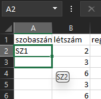
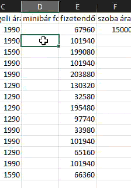
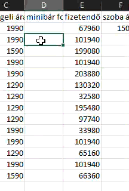
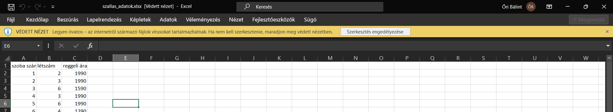
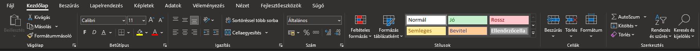

Ebben a leckében három példa segítségével ismételheted át és gyakorolhatod, amiket eddig tanultunk az Excelben. A végén egy kis tesztet is találsz, ami segít, hogy az elméleti tudásod is biztos legyen.
Egy kis segítség: ha így formázott részt látsz, arra rákattintva extra magyarázat vagy kép jelenik meg.
Amit így formáztam, az valami kiegészítés. Lehet, hogy részletesebben magyaráz valamit, de sokszor olyan dolgokat írok így, amiket (még) nem kell tudnod.
Ezt máskor nem írom már le, de amikor az internetről töltesz le fájlokat, akkor a mai szoftverek már vigyáznak, és nem engedik, hogy ugyanúgy nyisd meg ezeket, mint amiket te magad készítettél a számítóépeden. Ez természetesen jó, mert a nem megbízható fájlok veszélyesek lehetnek. Most viszont (vagy pl. ha e-mailben hazaküldöd magadnak a munkádat, hogy ott is lásd), amikor nem veszélyes a tartalom, ez egy plusz nehézséget okoz.
Letöltés után nyisd meg a fájlt! Nem biztos, de nagy valószínűséggel Védett nézetben nyílt meg. Zárd ezt be, mert amíg így van, csak megtekinteni tudod, szerkeszteni nem.
Először a már meglévő adatainkhoz adunk továbbiakat, mivel van, ami nem szerepel a táblázatban. Eközben azt is gyakoroljuk, hogy hogyan helyezhetünk át teljes oszlopokat.
Kattints jobb egérgombbal az A oszlop fejlécére, és válaszd ki a Beszúrás lehetőséget! A teljes táblázatod egy oszloppal elcsúszik, és az A oszlopban egy új, üres rész jelent meg!
Jegyezd meg! A beszúrás mindig a kijelölt oszlop elé (balra) és sor fölé hoz létre új sort vagy oszlopot!
Az A1 cellába írd be, hogy "szobaszám"! Alája számozzuk be a szobákat úgy, hogy mindegyik szoba száma előtt legyen egy SZ betű is (mint szoba)! Ha nem emlékszel, hogy ezt hogyan lehet a legegyszerűbben megcsinálni, akkor kattints ide!

Most soronként számoljuk ki a fizetendő összeget. Ez a számolás két részből áll: egyszer kiszámoljuk a létszám szerint fizetendő díjat (tehát azt, hogy az éjszakák száma és a lakók szerint mennyit kell fizetni), aztán ehhez hozzáadjuk a reggeli árát.
Legelőször megint szerkesztgetni kell az adatokat, mert a szoba egységára nem jó helyen van most. Jelöld ki a D1:D2 cellákat, ahol a szoba ára /fő/éj és a 15000 (Ft) van, és helyezd át ezeket egy oszloppal jobbra, az E oszlop tetejére!
A megüresedett D oszlopba fogjuk kiszámolni, hogy mennyi a fizetendő összeg. Írd be a D1-es cellába, hogy fizetendő, aztán lépj a D2-be, ide fogsz számolni. Először gondold végig, hogy mire kell figyelni! Tegyük fel, hogy mindenki két éjszakát töltött a szállodában. A fizetendő tehát minimum az E2-es cellában levő egységár kétszerese lesz a két éjszaka miatt. Ezt viszont annyival kell szorozni, ahányan az adott szobában voltak. Végül ehhez kell hozzáadni a reggeli árát. Hányszor? Ezt is kétszer annyiszor, ahányan voltak, mert két éjszaka után kétszer reggeliztek mindannyian. Ide kattintva ellenőrizheted, hogy jó képletet írtál-e be (eddig, mert még egy picit módosítani fogjuk!).
Ha voltál már szállodában, akkor emlékezhetsz a pici hűtőre, amiben egy csomó féle kis üveges ital van. Ha ezekből fogyasztasz, azt a távozás napján kell kifizetni, a szoba árával együtt. Most ezt számoljuk ki, hogy mennyivel növeli a képzeletbeli fogyasztás a szobákért fizetendő összeget.
Tegyük fel, hogy minden páros számú szobában fogyasztottak a minibárból, 1200 Ft értékben. Hogyan tudod a legkevesebb kattintgatással és írogatással beírni ezeket a megfelelő cellákba?
Az első lépés, hogy megint kellene csinálni egy új oszlopot. A D oszlop bal oldalára szúrj be egy üres oszlopot, hogy ide, még az összeg elé kerüljön a minibár fogyasztás! Írd be a D1 cellába, hogy minibár fogyasztás!
A D oszlop többi cellájába a fenti szabály szerint kell beírni a számokat. Próbáld meg megtalálni azt a módot, ahogyan kiterjesztheted, de ha nem megy, ide kattintva megnézheted, hogy én hogyan csináltam.


Ha megvan a minibár fogyasztás is, akkor ezt is add hozzá a fizetendő összeghez! Elég az E2-ben módosítani a képletet: a legvégére írd be, hogy +D2 és terjeszd ki! Figyeld meg, hogy a fixált cella is odébb ment, amikor beszúrtuk az üres oszlopot! A fixálás tehát annyira azért nem örök, hogy ha átgyúrom a táblázatot, akkor is maradjon: az oszlopok/sorok beszúrása és törlése tudja módosítani.
A táblázat még nem szép, egy kicsit formázzuk meg!
A legelső, hogy látszódjon minden szöveg. Ehhez kattints az A betű bal oldalán levő háromszögre, így kijelölöd az egész táblázatot. Most kattints duplán az A és a B oszlop közti elválasztóra! (Másik két oszlop közé is kattinthatsz.)
Most, hogy minden oszlop jó méretű, állítsuk be, hogy az árak Ft-ban jelenjenek meg! Jelöld ki azokat a cellákat, ahol pénzösszegek szerepelnek, és keresd meg a Szám részben a kis pénz ikont! Kattints rá, és máris forintban látod az összegeket.
A sok adat közt nehéz meglátni, ami igazán sófontos. Emeld még ki egy kicsit, hogy mennyi a tényleg fizetendő összeg! Ehhez jelöld ki az E oszlopot, és adj neki egy neked tetsző kiemelést, a szöveget pedig állítsd félkövérre!
Utolsó lépésként különítsük még el a fejlécet az adatoktól! Jelöld ki az első sort, és a Szegélyek részben adj hozzá egy vastag alsó szegélyt!
Ha kértem, hogy add be, akkor fontosak ezek a lépések, ne felejtsd el őket. Ha csak gyakoroltál, akkor nem kell még elmenteni sem, csak tudd ezeket megcsinálni.

Szerkesztés engedélyezése gombra! Hasonlóval más programoknál is találkozhatsz. Az Office csomag programjainál lényegében ugyanezt látod.">
A rendszer az adatbankból minden alkalommal 10 véletlenszerű feladatot sorsol ki. A ⭐ csillaggal jelölt kérdések az alapkövetelményeket kérik számon, míg a 🌟 pluszpontos kérdésekkel extra pontokat lehet gyűjteni.